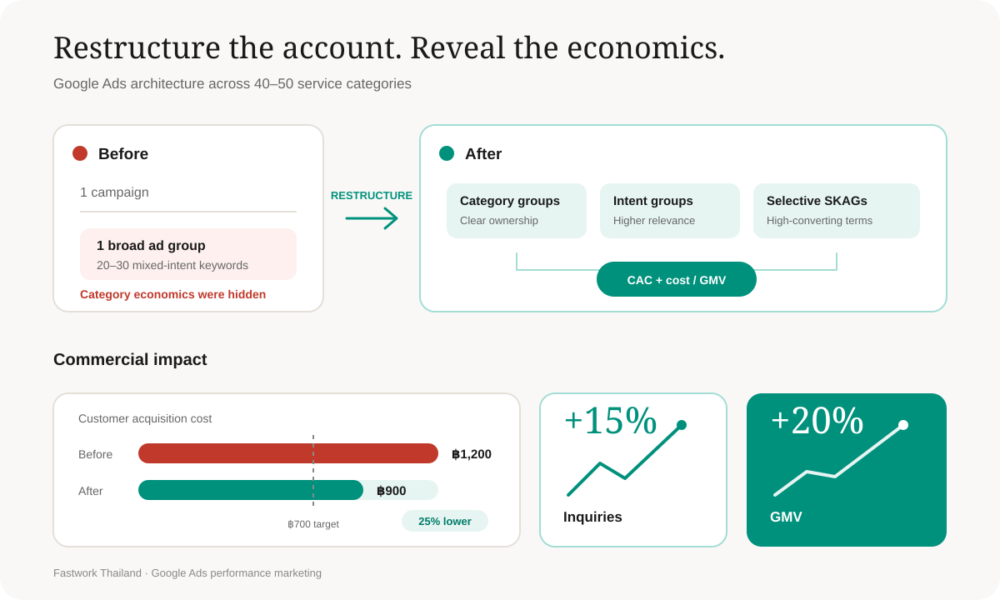

Fastwork Thailand · Performance marketing
Making paid growth measurable across 40–50 service categories.
I rebuilt a Google Ads account managing approximately ฿1M per month around category economics—giving the team clearer control over acquisition cost while increasing marketplace demand and GMV.
- Role
- Marketing Manager
- Focus
- Demand-side growth
- Channel
- Google Ads
- Budget
- ~฿1M per month
- Market
- Thailand
CAC, from approximately ฿1,200 to ฿900
Marketplace inquiries
Gross merchandise value
Service categories managed
The challenge
One broad campaign could not show which categories were creating value.
The account grouped 20–30 mixed-intent keywords into one ad group. As Fastwork expanded its service categories, that structure made it difficult to manage relevance, understand performance by category, or compare media cost against GMV.
The goal was not simply to buy more traffic. It was to build a structure that could scale demand while making category-level economics visible.
What I changed
I reorganized the account around how customers search—and how the business earns.
-
01
Separated categories and search intent
Moved from one broad ad group to multiple focused ad groups, making performance easier to diagnose and control.
-
02
Used selective SKAGs where precision mattered
Isolated high-converting keywords to improve ad relevance, quality score, and bidding control without overcomplicating the full account.
-
03
Connected acquisition cost to marketplace value
Implemented conversion tracking and extensive Google Analytics analysis, then introduced category-level cost-to-GMV reporting so optimization decisions reflected commercial return—not only clicks or leads.
A clearer account structure created a clearer growth system.
The redesign linked campaign decisions to category-level CAC and cost/GMV performance.

The result
CAC improved from approximately ฿1,200 to ฿900 while inquiries increased 15% and GMV increased 20%.
What I learned
Better campaign structure does more than improve media efficiency—it makes the business easier to understand.
The ฿700 CAC target was not fully reached, but the direction became measurable and repeatable. Tracking cost against GMV by category created a stronger basis for continued optimization as Fastwork expanded.